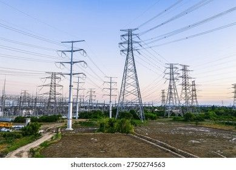

OpenAI 關鍵問題明朗，AI 晶片股仍震盪
MarketWatch 指出，投資人雖然對 OpenAI 的一項關鍵議題取得明確資訊，AI 晶片類股走勢卻依然反覆。
10-09
MarketWatch 指出，投資人雖然對 OpenAI 的一項關鍵議題取得明確資訊，AI 晶片類股走勢卻依然反覆。
輝達股價甫創歷史新高後回落；市場傳出 SpaceX 正尋求 400 億美元資金以採購輝達 AI 晶片。
Yahoo Finance 探討輝達與 Groq 那筆 200 億美元交易遭遇的法律挑戰，以及它對輝達估值的實際影響。
Investor's Business Daily 報導，剛創下歷史高點的超微被納入一組共 16 檔的新晉最佳股票清單。
CNBC 報導，Meta 個人 AI 代理產品 Muse 的人氣推升超微股價再創新高，AI 代理應用為其 CPU 銷售注入動能。
儘管多家分析師調升美光目標價，股價仍無法突破 1,100 美元關卡，回落至 1,035 美元。
DA Davidson 大幅上調美光目標價至 3,000 美元，股價再度挑戰 1,100 美元壓力區。
Barchart 整理博通那筆規模達 500 億美元、用於支援 OpenAI 採購晶片的融資安排之關鍵細節。
博通宣布針對 Anthropic 的大規模 AI 晶片融資方案後，股價上漲 5.8%。
市場傳出 OpenAI 營收與原先宣稱數字之間存在 200 億美元落差，引發 AI 相關股票集體賣壓。
Yahoo Finance 報導，博通正安排 500 億美元的融資，以便 OpenAI 有能力採購其晶片。
Yahoo Finance 報導，在邁威爾上調 AI 營收目標之後，其股價仍被估算低於合理價值達 49%。
高通股價連跌三日；有放空者宣稱在程式碼中發現與 Anthropic 的「隱藏」合作，事後確認該交易並不存在。
The Motley Fool 比較應用材料與高通的營收趨勢，試圖解讀兩家在 AI 浪潮中的相對位置。
Stock Titan 報導，艾克爾一位董事在以 8.51 美元行使選擇權後，以 55 美元價位賣出 5,000 股。
Yahoo Finance 報導，美超微的一家承包商在規模達 25 億美元的 AI 伺服器走私案中認罪。
美超微的 12 個月目標價被調升至 42.27 美元，但該價位反而隱含約 6% 的下跌空間。
Investor's Business Daily 報導，市場對東芝的競爭疑慮出現新發展，希捷與威騰股價應聲下挫。
威騰與希捷股價出現反彈，Investor's Business Daily 整理華爾街對東芝競爭議題的說法。
威騰股價過去三個月下跌近 20%，一位備受市場尊敬的華爾街分析師認為後續仍有 140% 的上漲空間。
Investor's Business Daily 提出一種較少人用的加碼進場方式，適用在微軟與 Palantir 突破後的布局。
Melius 的 665 美元目標價評等調升，搭配微軟與 SpaceX 的雲端合作洽談消息，推升股價挑戰高點。
Benzinga 報導，Melius 以 AI 資安需求為由把微軟調升為買進，目標價 665 美元。
Benzinga 報導，億萬富翁 Philippe Laffont 對星座能源的 12 億美元部位，因谷歌的 AI 電力布局而受惠。
Seeking Alpha 以 AI 運算規模為核心論據，給出 Alphabet「強力買進」的評等。
作家 Cal Newport 提出警告，認為谷歌有可能在 AI 領域直接侵蝕 OpenAI 的市場。
Seeking Alpha 以「自我顛覆」的角度分析 Alphabet，認為它正在開發可能取代自身現有業務的產品。
Tigress 以 AI 成長為由把亞馬遜目標價調升至 385 美元，意味股價仍有約 50% 的上漲空間。
Yahoo Finance 估算，若現在投入 1 萬美元於亞馬遜，到 2030 年可能成長到的規模。
Barron's 報導，有分析師把 Meta 目標價上調至 1,000 美元，認為其 AI 投資將帶來可觀回報。
報導指出，川普在八月申報的 517 筆交易中，買進 Meta 股票的金額最高達 2,500 萬美元，是其中最大的一筆。
Stocktwits 報導，Cloudflare 在財報公布前再度獲得上調目標價，分析師預期其將再交出年增 30% 的成績。
BTIG 把 Cloudflare 的目標價從 382 美元調升至 413 美元。
Stocktwits 報導，馬斯克正在審視 Cloudflare 技術長提出的方案，試圖解決 Starlink 面臨的 AI 流量難題。
Stock Titan 報導，Cloudflare 一位聯席董事長以 2.04 美元行使選擇權，同時其信託出售持股。
Investor's Business Daily 將 Snowflake 列為當日焦點股，指出其出現買進訊號，AI 相關成效正不斷累積。
Zacks 整理華爾街分析師對 Snowflake 的看法，平均隱含 25.64% 的上漲空間。
一項未經證實的資料外洩宣稱出現在 Asos App 上，導致 Snowflake 股價走低。
Seeking Alpha 認為 Snowflake 的商業體質值得肯定，但目前股價並不划算，因此調降評等。
Investing.com 報導，Okta 的財務會計主管出售價值 320 萬美元的公司股票。
根據近期提交給 SEC 的文件，Okta 一位內部人出售了價值 3,196,603 美元的股票。
Seeking Alpha 認為，以 54 倍調整後本益買進 Okta，等於為一個尚未被證實的機會付出過高代價。
Stock Titan 報導，Okta 主管 Shibu Ninan 規劃出售 14,677 股，金額約 321 萬美元。
Zscaler 重申 2027 年展望、同時擴大 AI 資安領域的合作，股價上漲 9.1%。
Yahoo Finance 整理 Zscaler 公布與 IBM 合作關係時，投資人應該掌握的關鍵資訊。
Yahoo Finance 澳洲版探討，在三個月上漲 45% 之後，Zscaler 持股人該如何抉擇。
Stock Titan 報導，AWS 與輝達擴大與 CrowdStrike 的合作計畫，該計畫下的新創公司已募集近 10 億美元。
Benzinga 報導，在 AI 資安需求爆發之下，CrowdStrike 股價創下歷史新高，2026 年以來漲幅達 147%。
Stocktwits 報導，Needham 調升 CrowdStrike 目標價，理由是其 Flex 訂閱模式帶來的成長動能。
Yahoo Finance 指出，CrowdStrike 股價漲勢凌厲，但從估值角度計算已出現警示訊號。
Stock Titan 報導，CrowdStrike 旗下某項 AI 資安業務自推出以來，三個季度內成長超過 79 倍。
Investor's Business Daily 提出一筆適用於 Palo Alto 的長期選擇權交易架構。
Stock Titan 報導，Palo Alto 一位董事的信託出售 250 股，該董事本人另直接持有 1,644 股。
Yahoo Finance 新加坡版整理 Palo Alto 與其他兩檔值得留意的 AI 資安概念股。
Stock Titan 報導，思科推出名為 Dialog 的新產品，使 AI 助理能在客戶對話結束後繼續處理後續工作。
MarketBeat 報導，Canandaigua National Trust Co of Florida 買進思科 12,086 股。
高盛把 Palantir 評等調升為買進、目標價 230 美元，股價單日上漲 4%。
Yahoo Finance 報導，Palantir 股價距再創新高僅 8 美元，高盛形容其 AI 機會正出現階躍式的轉變。
Yahoo Finance 報導，在 Lumen 推出 Intelligent Internet 之後，其股價可能被低估達 26%。
Investor's Business Daily 指出，處於多頭趨勢的 Arista 提供了一個可快速獲利的價差交易機會。
Yahoo Finance 報導，憑藉穩健的執行力與上調後的業績指引，Arista 的表現超越其他 AI 基建公司。

Seeking Alpha 在 Vertiv 第三季財報公布前分析，認為其目前的布局提供了扎實的上漲空間。
Jim Cramer 表示，基於最新就業數據所反映的趨勢，GE Vernova 與 Vertiv 是他看好的兩檔標的。
Seeking Alpha 指出，Vertiv 的成長完全符合預期，但這種「毫無驚喜」本身反而構成隱憂。
The Motley Fool 指出，資料中心僅佔 GE Vernova 訂單簿的兩成，並論證這其實是利多而非風險。
Markets.com 分析，資料中心用電需求與電網投資是否能成為 GE Vernova 下一波上漲的引擎。
Yahoo Finance 認為，在一波 70% 的漲勢之後，GE Vernova 的估值已經偏高。
Jim Cramer 表示，基於就業數據反映的趨勢，GE Vernova 與 Vertiv 是他推薦買進的兩檔股票。
Yahoo Finance 報導，市場對 AI 與資料中心支出的疑慮，對 GE Vernova 股價形成壓力。
Yahoo Finance 報導，Jim Cramer 對伊頓與 Nucor 都給出正面看法，並點出其中一檔才是市場忽略的資料中心受惠股。
Investor's Business Daily 報導，與谷歌簽訂的核電協議使星座能源成為標普 500 中表現最突出的股票。
Investor's Business Daily 分析，三家標普 500 公用事業巨頭股價同時突破關鍵壓力位背後的原因。
Investor's Business Daily 分析，包含 Vistra 在內的三家標普 500 公用事業巨頭同時突破關鍵壓力位的原因。
GuruFocus 報導，美國能源部承諾 42 億美元貸款用於核電廠升級，Vistra 股價上漲 3.5%。
The Globe and Mail 整理分析師對公用事業類股的看法，聚焦 Portland GE 與 Vistra。
Stock Titan 報導，Vistra 財務長的家族信託以每股 165 美元、依預先設定的交易計畫出售持股。
Investor's Business Daily 分析，三家標普 500 公用事業巨頭股價同時突破關鍵壓力位的原因。
Yahoo Finance 引述金融時報報導，新紀元能源 670 億美元收購 Dominion 的案子，在維吉尼亞州遭遇政治反對。
The Globe and Mail 整理分析師對 Shift4 Payments、Enphase 與 Zeta Global 三家公司的看法。
Kalkine Media 探討，Enphase 的 IQ Meter Collar 產品取得公用事業核准後，能否為股價帶來助力。
Kalkine Media 分析，在用電需求持續攀升之際，Enphase 能否受惠於家庭太陽能與儲能市場的成長。
Yahoo Finance 報導，在評估暖通空調業務的成長風險後，分析師下調了 SPX 的合理價值。
Stock Titan 報導，SPX 排定於 10 月 29 日下午 4 點 45 分舉行法說會，由執行長與財務長出席。
Stock Titan 報導，Jennifer Carpenter 交付 183 股 SPX 股票，用以繳納股票歸屬產生的稅款。
Investor's Business Daily 指出，戴爾股價除了受到川普相關題材帶動，另有更實質的強勢理由。
Forbes 報導，股市上漲使邁克爾·戴爾的淨資產大幅增加，與谷歌共同創辦人 Larry Page 的差距正在縮小。
Stock Titan 報導，惠普一位高階主管依預設交易計畫，以每股 32.12 美元賣出 31,572 股。
Stocktwits 報導，受惠於 3D 列印業務的推進，惠普創下一年多來最佳單日表現，股東亦通過擴大激勵計畫。
Stock Titan 報導，微軟執行長納德拉與輝達執行長黃仁勳首次公開展示惠普打造、執行 Windows 的 AI 電腦。
Yahoo Finance 報導，在康寧股價大幅下跌之後，Jim Cramer 仍然看好其光纖業務的發展敘事。
Simply Wall Street 認為，在 30 億美元的 AT&T 協議之後，康寧的股價仍處於低估狀態。
Simply Wall Street 探討，與 AT&T 的光纖協議是否已經改變康寧原本的投資價值論述。